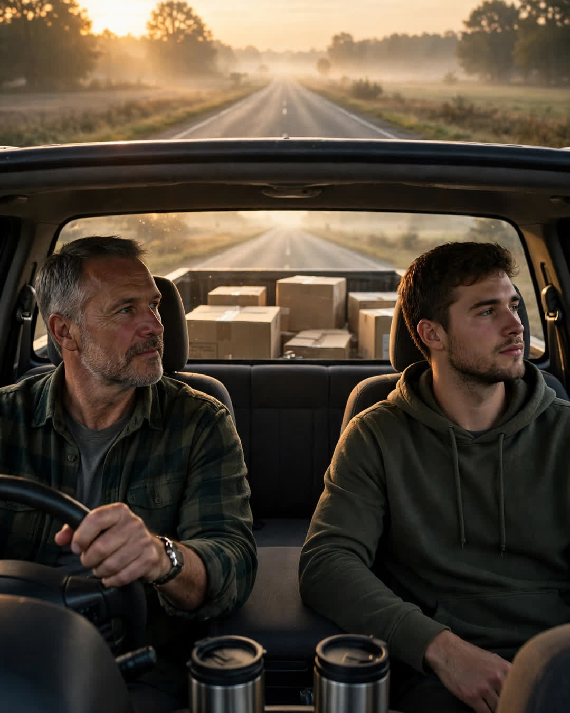

The Silent Drive
A Clipp Kaili original story

My father drove me eight hours to my new life and said maybe forty words the entire way.
I was twenty-two, moving to a city where I knew no one, for a job I wasn't sure I could do. He loaded my boxes into his truck the night before without being asked. At five in the morning, he was in the driveway with two travel mugs and the radio already off.
Dad was never a talker. Mom used to say he did his loving with his hands — fixed things, carried things, showed up. But eight hours is a long time to sit beside a person, and somewhere around the state line, I started to hold his silence against him. I had a speech prepared in my head about support. About how a father should say he was proud, or that he'd miss me, or anything at all.
He bought gas. He checked the map. At noon he pulled into a diner, ordered for both of us — he'd remembered my order from when I was twelve — and said, "Eat. Long way yet."
That was the whole conversation. Eight hours.
We got to the apartment building at dusk. It looked smaller and meaner than its photographs, and something in my chest went thin and scared. Dad carried every box up three flights. Every one. When I tried to take the heavy one, he just looked at me until I put my hands down. He set up my bed frame. He tested the lock on the door twice. He put the toolbox he'd brought — his spare, the good one — on the kitchen counter.
Then it was time, and he stood in the doorway of my new life with his keys in his hand, and I braced for the silence to follow me inside and live there.
"Son."
Forty words all day. This was one of them.
"Your mother wanted me to say things." He looked at the toolbox instead of me, because some sentences can only be said to furniture. "She wrote them down. I lost the paper somewhere around mile sixty."
I laughed, surprised, and it came out wet.
"But I figure—" He stopped. Started again. "I figure driving you here was the saying of it."
Then he hugged me. Not the back-slap kind. The real kind, the kind he'd given me maybe six times in twenty-two years, holding on like the truck might leave without him if he let go too soon. And in my ear, quiet as a man can make a voice and still be heard, he said the other thing — the one he'd driven eight hours and four hundred miles to deliver in person:
"Call when you get lonesome. I'll keep the porch light on."
He drove eight hours home alone, in the dark, with the radio off.
I called that Sunday. And the next. Twenty years later, I have a son of my own getting ready to leave, and I finally understand that drive — every silent mile of it.
Some fathers give speeches.
Mine gave me a ride, a toolbox, and a porch light that is still on.
This story is a work of fiction, written to touch hearts and bring families closer.
← Back to all stories